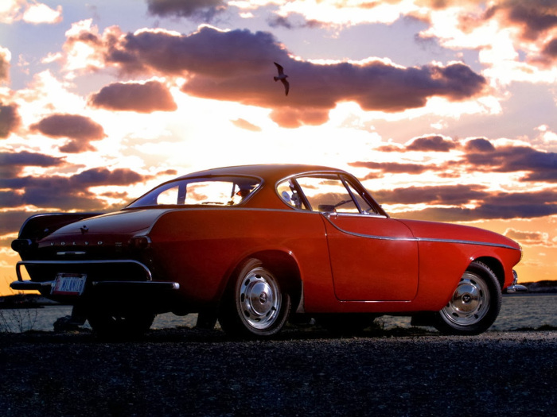
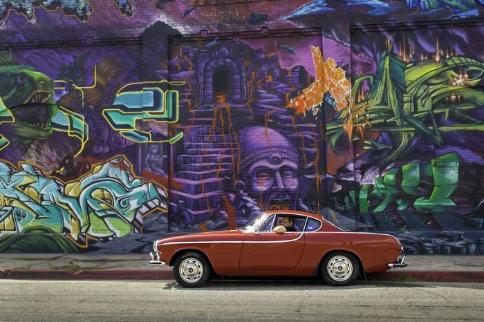

VOLVO P1800 E IRV GORDON. 4,8 MILLONES DE KILÓMETROS JUNTOS.

Irv Gordon salía del concesionario de Volvo en Nueva York el 30 de Junio de
1966. Acababa de adquirir un elegante coupé de la marca sueca, que ya
entonces presumía de la “confiabilidad” de sus coches. Era viernes, e Irv
pudo probar su adquisición

Desde entonces ambos han compartido nada menos que 4,8 millones de kilómetros
(3 millones de millas) y el P1800 S de Irv Gordon
es desde hace más de un millón de millas el automóvil que más distancia ha
recorrido en el mundo.
Gordon, profesor de ciencias, conducía entonces 200 km diarios para llegar a su
trabajo, lo que le ayudó a acumular ya una importante distancia. En 1976 llegaban al medio
millón de millas (805.000 km) y en el 87 recorrían juntos el primer millón (1,6 millones de km).

En 1998 los medios se hacían eco cuando entraban en el Libro Guiness de los Records. El odómetro del Volvo habría
marcado 1,69 millones de millas en ese momento, pero apenas habían completado la mitad de la aventura de la que son protagonistas hoy.
En 2002 la pareja completaba los 2 millones de millas (3,2 millones de kilómetros).
Alcanzar los 3 millones de millas (4,8 millones de km) recorridas es un acontecimiento
en si mismo y así fue planeado. Gordon se desplazó en avisión hasta Alaska para encontrarse
con el Volvo, que viajaba en camión.